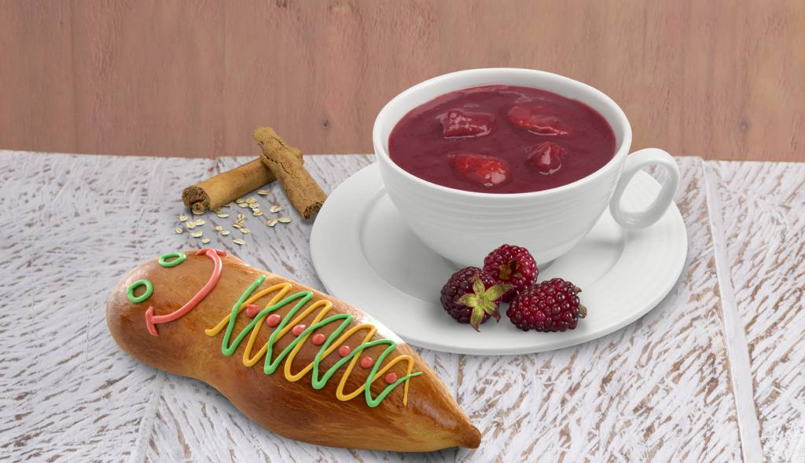

Colada Morada
Bebida por el día de los muertos
La colada morada es una bebida típica originaria de Ecuador. Ésta se prepara con harina de maíz morada , la cual le da su consistencia espesa y acentúa el color que le da nombre a esta bebida. Algunas personas, en lugar de harina de maíz, usan almidón de maíz (maicena), frutas como la naranjilla, piña, mora o mortiño (arándano silvestre del páramo andino). También lleva una serie de hierbas aromáticas y cortezas, como la canela, y otras especias dulces. Es una comida que se come tradicionalmente el 2 de noviembre, día de los difuntos o "días de los muertos",1 junto con las llamadas guaguas de pan (pan usualmente de sabor no ordinario y de diversos rellenos que tiene forma de muñeca, de ahí el nombre). Aunque la tradición es comerlo el día de difuntos, su consumo se comercializa normalmente en el mes de octubre.

Norma: Me encanto conocer mas sobre esta deliciosa bebida.

Pedro: Tambien se debe decir que se acostumbre llevar este plato a los difuntos.